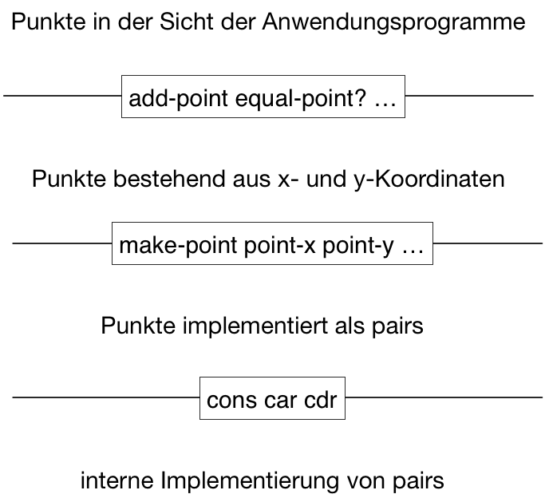

Datenabstraktion
Einführung in die Programmierung
Zusammengesetzte Datenstrukturen
- Im Abschnitt über die Verwendung von Hilfsfunktionen wurde der Begriff der prozeduralen Abstraktion geprägt: Eine Funktion kann unter Verwendung von Hilfsfunktionen entwickelt werden, ohne die Details ihrer Implementierung kennen zu müssen. Davon kann abstrahiert werden.
- Datenabstraktion ermöglicht mit zusammengesetzten Daten (Datenstrukturen) zu arbeiten, ohne wissen zu müssen, wie sie aus primitiveren Datenobjekten konstruiert werden.
Datenabstraktion
- Grundgedanke: Einzelne Dinge werden zu einem neuen Ganzen.
- Aus 5000 Einzelteilen entsteht ein Auto.
- Aus zwei Keksen und Schokocreme entsteht ein Waffelkeks.
- Aus zwei Koordinaten entsteht ein Punkt.
- Aus einer Menge von Merkmalen entsteht eine Objektstruktur.
Beispiel: Rechnen mit Punkten in der Ebene
- In den bisherigen Beispielen wurden nur Funktionen betrachtet, die atomare Daten (Zahlen) verarbeiten.
- Jetzt rechnen wir mit Punkten in der Ebene
Defintion von Punkten
- Ein Punkt in der Ebene wird durch seine x- und seine y-Koordinate bestimmt (kartesisches Koordinatensystem).
Wir tun so, als ob wir eine Funktion
make-pointzur Verfügung hätten, die einen Punkt erzeugt, z. B. so:(make-point 3 4)
Nehmen wir weiter an, es gäbe zwei Funktionen, die die x- bzw. die y-Koordinate eines Punkts zugänglich macht:
(point-x (make-point 3 4)) ;;=> 3 (point-y (make-point 3 4)) ;;=> 4
Punkt-Funktionen
Unter diesen Voraussetzungen könnte eine Funktion zur Addition zweier Punkte wie folgt definiert werden:
(define add-point (lambda [p1 p2] (make-point (+ (point-x p1) (point-x p2)) (+ (point-y p1) (point-y p2)))))
Weitere
point-Funktionen könnten sein:(define equal-point? (lambda [p1 p2] (and (= (point-x p1) (point-x p2)) (= (point-y p1) (point-y p2))))) (define distance-to-0 (lambda [p] (sqrt (+ (sqr (point-x p)) (sqr (point-y p))))))
- Diese (und weitere) Funktionen können programmiert werden, ohne
- die Funktionen
make-point,point-xundpoint-yimplementiert zu haben und - eine konkrete Repräsentation von Punkten angegeben zu haben.
- die Funktionen
Implementierung der Datenstruktur durch pairs
Anmerkung: Die hier gezeigte Implementierung funktioniert nicht in den Lehrsprachen von DrRacket.
- Racket stellt eine einfache, aus zwei Komponenten bestehende
Verbundstruktur – genannt
pair– zur Vefügung. - Ein
pairkann mithilfe der Funktionconserzeugt werden. conserwartet zwei Argumente und gibt ein zusammengesetztes Datenobjekt zurück, das die beiden Argumente als Teile enthält. Beispiel:(cons 3 4)liefert(3 . 4)Für den Zugriff auf die beiden Teile eines
pairsgibt es die beiden Funktionencarundcdr:(car (cons 1 2)) ;;=> 1 (cdr (cons 1 2)) ;;=> 2
Die Funktionen make-point, point-x und point-y
make-pointheißt auch Konstruktionsfunktion.point-xundpoint-ynennt man auch Selektionsfunktionen.
(define make-point (lambda [x y] (cons x y))) (define point-x (lambda [p] (car p))) (define point-y (lambda [p] (cdr p)))
Abstraktionsbarrieren

Nutzen der Abstraktion
- Programm leichter pflegbar
- Komplexe Datenstrukturen können auf verschieden Arten unter Verwendung der von der Programmiersprache bereitgestellten primitiven Strukturen implementiert werden.
- Die Implementierung mithilfe von
pairserfordert allerdings für jede neu zu definierende Datenstruktur die erneute Implementierung von Konstruktions- und Selektionsfunktionen. („boiler plate code”) - Deshalb sehen Programmiersprache häufig komfortablere Möglichkeiten vor, Datenstrukturen zu definieren.
Definition von Strukturen in Racket
- Sprache: DrRacket-Lehrsprache „Zwischenstufe mit lambda”
- Für die Definition von Strukturen (Verbünde, records) steht die
Pseudofunktion
define-structzur Verfügung. Punkte im zweidimensionalen, kartesischen Koordinatensystem (s. o.) könnten wie folgt definiert werden:
(define-struct point [x y])
- Mit dieser Definition stehen automatisch die folgenden Funktionen bereit:
make-point: akzeptiert zwei Zahlen als Argumente und erzeugt ein neues Exemplar der Strukturpoint.point-x: akzeptiert ein Exemplar der Strukturpointund liefert diex-Komponente.point-y: akzeptiert ein Exemplar der Strukturpointund liefert diey-Komponente.point?: akzeptiert einen beliebigen Wert als Argument und liefert#true, falls der Wert ein Exemplar der Strukturpointist.
Benutzungsbeispiel in DrRacket
Willkommen bei DrRacket, Version 6.7 [3m]. Sprache: Zwischenstufe mit lambda; memory limit: 128 MB. > (define-struct point [x y]) > (define p1 (make-point 3 4)) > p1 (make-point 3 4) > (point-x p1) 3 > (point-y p1) 4 > (point? p1) #true > (point? "p1") #false >
Weiterverwendung von add-point …
Die in Abschnitt Punkt-Funktionen eingeführten Funktionen
(define add-point (lambda [p1 p2] (make-point (+ (point-x p1) (point-x p2)) (+ (point-y p1) (point-y p2))))) (define equal-point? (lambda [p1 p2] (and (= (point-x p1) (point-x p2)) (= (point-y p1) (point-y p2))))) (define distance-to-0 (lambda [p] (sqrt (+ (sqr (point-x p)) (sqr (point-y p))))))
können unverändert bleiben.
Regel (7) für das Aufschreiben von Strukturdefinitionen
- Für den Entwurf einer zusammengesetzten Datenstruktur ist es hilfreich, ihre Zusammensetzung durch einen Kommentar genau zu beschreiben.
- Anschließend erfolgt der passende Aufruf von
define-struct Beispiel:
;; Ein Rechteck ist ein Wert ;; (make-rectangle a b) ;; wobei a und b Zahlen sind, die die Seitenlängen eines Rechecks ;; beschreiben. (define-struct rectangle [a b])
Regel 7 (Datenstrukturen)
- Finde durch die Datenanalyse heraus, aus welchen Komponenten die Datenstruktur besteht.
- Schreibe dann die Datendefinition in der Form auf:
; Ein \(s\) ist ein Wert
; (make-s s1 … sn)
; wobei s1 … - Definiere die Datenstruktur:
(define-struct \(s\) [\(s_1\) …])
Entwicklungsmethodik für strukturverarbeitende Funktionen
Regel 8 (strukturverarbeitende Funktionen)
- Bestimme die für die Berechnung des Ergebnisses erforderlichen Komponenten der Datenstruktur!
- Für jede Komponente der Datenstruktur, von deren Wert das Ergebnis der Funktion abhängt, schreibe den zugehörigen Selektor in die Funktionsschablone.
- Falls die Funktion eine Datenstruktur als Resultat liefern muss, nimm den Aufruf des Konstruktors in die Schablone mit auf.
Anwendungsbeispiele für Regel 8
Für die Funktion add-point ergäbe sich damit die folgenden Schablone:
(define add-point (lambda [p1 p2] (make-point (... (point-x p1) (point-x p2)... ... (point-y p1) (point-y p2)...))))
Für die Funktion equal-point? ergäbe sich eine Schablone ohne Konstruktor:
(define equal-point? (lambda [p1 p2] (... (... (point-x p1) (point-x p2)... ... (point-y p1) (point-y p2)...))))
Regel-konforme Aufschreibung der Funktionen equal-point? und add-point
equal-point?
;; ein Punkt ist ein Wert ;; (make-point x y) ;; wobei x und y Zahlen sind und die kartesischen Koordinaten ;; eines Punkts in der Ebene darstellen. (define-struct point [x y]) ;; prüft zwei Punkte auf Gleichheit, die durch die Gleichheit ;; der x- und der y-Koordinaten gegeben ist. (define equal-point? (lambda [p1 p2] (and (= (point-x p1) (point-x p2)) (= (point-y p1) (point-y p2))))) ;; Beispielanwendungen: (not (equal-point? (make-point 2 3) (make-point 5 1))) (equal-point? (make-point 2 3) (make-point 2 3))
add-point
;; Berechnung eines neuen Punktes durch die Addition zweier Punkte (define add-point (lambda [p1 p2] (make-point (+ (point-x p1) (point-x p2)) (+ (point-y p1) (point-y p2))))) ;; Beispielanwendungen: (equal-point? (add-point (make-point 2 3) (make-point 5 1)) (make-point 7 4))
Formulierung von Tests
Tests statt Beispielanwendungen
- Man beachte, dass Formulierung der Beispielanwendungen für die
Funktion
add-pointdie Existenz der Funktionequal-point?voraussetzt. - Ohne diese Funktion wäre das Aufschreiben der Beispielanwendungen erheblich umständlicher.
- Die Pseudofunktion
define-structerzeugt leider kein Gleichheisprädikat automatisch. - Racket bietet aber die Möglichkeit Testprozeduren anstelle von Beispielanwendungen zu benutzen.
Die Funktion add-point mit Tests
- Statt des selbst definierten Gleichheitsprädikats
equal-point?verwenden wir für den Test die Standard-Testprozedurcheck-expect. check-expecterwartet zwei Argumente:- den zu testenden Ausdruck
- den Erwartungswert
;; ein Punkt ist ein Wert ;; (make-point x y) ;; wobei x und y Zahlen sind und die kartesischen Koordinaten ;; eines Punkts in der Ebene darstellen. (define-struct point [x y]) ;; Berechnung eines neuen Punktes durch die Addition zweier Punkte (define add-point (lambda [p1 p2] (make-point (+ (point-x p1) (point-x p2)) (+ (point-y p1) (point-y p2))))) ;; Tests: (check-expect (add-point (make-point 2 3) (make-point 5 1)) (make-point 7 4))
- Betätigt man nun den Start-Knopf von DrRacket, erscheint im Interaktionsfenster:
Willkommen bei DrRacket, Version 6.7 [3m]. Sprache: Zwischenstufe mit lambda; memory limit: 128 MB. Der eine Test ist bestanden! >
Testfälle in Racket
- (check-expect expr expr)
- Dieser Testfall überprüft, ob der erste expr den gleichen Wert hat wie der zweite expr, wobei das zweite expr meist ein Literal ist.
- (check-within expr expr expr)
- Wie check-expect, aber mit einem weiteren Ausdruck, der als Wert eine Zahl delta hat. Dieser Testfall überprüft, dass jede Zahl im Resultat des ersten expr maximal um delta von der entsprechenden Zahl im zweiten expr abweicht.
- (check-member-of expr expr …)
- Ähnlich wie check-expect: Der Testfall überprüft, dass das Resultat des ersten Operanden gleich dem Wert eines der folgenden Operanden ist.
- (check-range expr expr expr)
- Ähnlich wie check-expect: Alle drei Operanden müssen Zahlen sein. Der Testfall überprüft, ob die erste Zahl zwischen der zweiten und der dritten liegt (inklusive).
- (check-error expr expr)
- Dieser Testfall überprüft, ob der erste expr einen Fehler produziert, wobei die Fehlermeldung der Zeichenkette entspricht, die der Wert des zweiten expr ist.
Modifikation der Regel 3
Regel 3neu
Schreibe Tests für die Funktion unter Verwendung der
check-...-Prozeduren von Racket auf.
Es ist üblich, die Tests zwischen die Zweckbestimmung und die Funktion zu schreiben.
Anwendung auf die Funktion distance-to-0
;; ein Punkt ist ein Wert ;; (make-point x y) ;; wobei x und y Zahlen sind und die kartesischen Koordinaten ;; eines Punkts in der Ebene darstellen. (define-struct point [x y]) ;; berechnet den Abstand eines Punktes vom Ursprung des ;; Koordinatensystems (check-within (distance-to-0 (make-point 2 2)) (sqrt 8) 0.01) (check-within (distance-to-0 (make-point (sqrt 8) (sqrt 8))) 4 0.01) (define distance-to-0 (lambda [p] (sqrt (+ (sqr (point-x p)) (sqr (point-y p))))))
Frage: Warum brauchen wir hier die Testprozedur check-within?
(Aufgaben zu Datenstrukturen)
Gemischte Daten
Datenabstraktion durch Generalisierung
- Funktionen sollen verschiedene – aber verwandte – Datenstrukturen verarbeiten.
- Beispiel: Rechtecke und Kreise sind geometrische Figuren.
;; Eine Figur ist entweder
;; - ein Rechteck oder
;; - ein Kreis
;; Name: shape
- Für
shapes-verarbeitende Funktionen sind nur die Datenstrukturdefinitionen für Rechtecke und Kreise erforderlich.
Definition von rectangle
;; Eine Rechteck ist ein Wert ;; (make-rectangle h w) ;; wobei h eine Zahl für die Höhe, ;; w eine Zahl für die Breite ;; des Rechtecks ist (define-struct rectangle [h w]) ;; Rechteckfläche berechnen (check-within (rect-area (make-rectangle 2.5 3.0)) 7.5 0.01) (define rect-area (lambda [r] (* (rectangle-h r) (rectangle-w r))))
Definition von circle
;; Ein Kreis ist ein Wert ;; (make-cicle r) ;; wobei r eine Zahl für den Radius ist. (define-struct circle [r]) ;; Kreisfläche berechnen (check-within (circle-area (make-circle 1.0)) pi 0.01) (define circle-area (lambda [r] (* (circle-r r) (circle-r r) pi)))
Flächeninhalt von Figuren
;; Eine Figur ist entweder ;; - ein Rechteck oder ;; - ein Kreis ;; Name: shape ;; Flächeninhalt einer Figur berechnen (check-within (shape-area (make-circle 1.0)) pi 0.01) (check-within (shape-area (make-rectangle 2.5 3.0)) 7.5 0.01) (define shape-area (lambda [s] (cond [(circle? s) (circle-area s)] [(rectangle? s) (rect-area s)])))
Entwurfsmethodik für Funktionen zur Verarbeitung gemischter Daten
Regel 9 (Funktionen für gemischte Daten)
- Wenn sich bei der Datenanalyse herausstellt, dass
gemischte Daten zu verarbeiten sind, schreibe zunächst eine
Datendefinition in der Form auf:
;; Ein \(s\) ist entweder
;; - ein \(t_1\) oder
;; - \(\ldots\) oder
;; - ein \(t_n\)
;; Name: x - Für eine \(s\) -verarbeitende Funktion ist mindestens je ein Testfall für jede Variante von \(s\) aufzuschreiben.
Seien
t1?,t2?, …,tn?die Prädikate zu den in \(s\) vorkommenden Varianten \(t_1, t_2, \ldots, t_n\). Dann ergibt sich für eine \(s\) -verarbeitende Funktion die folgende Funktionsschablone:(check-... ) ... (check-... ) (define f (lambda [x] (cond [(t1? x) ...] [(t2? x) ...] ... [(tn? x) ...])))
(Aufgaben zu gemischten Daten)
Exkurs: Algebraische Datentypen
Produkttypen
- Die in Kapitel Definition von Strukturen in Racket erläuterten Strukturdefinitionen nennt man oft auch Produkte.
- Die Menge aller Exemplare der Strukturdefinition
pointkann man als Teilmenge des kartesischen Produkts \[number \times number\] angesehen werden. - Daher die Bezeichnung Produkttypen.
Summentypen
Die in Kapitel Gemischte Daten eingeführten varianten Typen
Eine Figur ist entweder ein Rechteck oder ein Kreis.
werden auch als Summentypen bezeichnet.
- Die Menge aller Figuren ist die Vereinigung der Menge aller Kreise mit der Menge aller Rechtecke.
- Die Vereinigung von Mengen wird auch als die Summe der Mengen bezeichnet.
- Daher die Bezeichnung Summentypen.
Haskell
Der Begriff der algebraischen Datentypen ist inbesondere im Kontext der Programmiersprache Haskell sehr gebräuchlich.